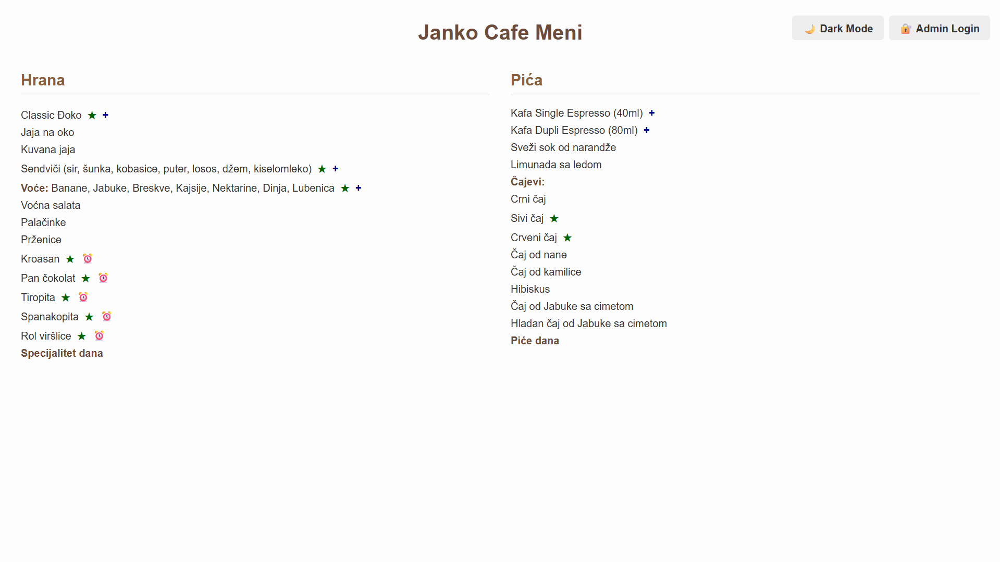

Janko Cafe

Janko Cafe is an online site, which basically a digital
menu, for Janko Cafe. It was created, so that our menu is
available to all costumers, and so that we save paper!
Currently, the site only supports menu viewing. Online
ordering isn't available.